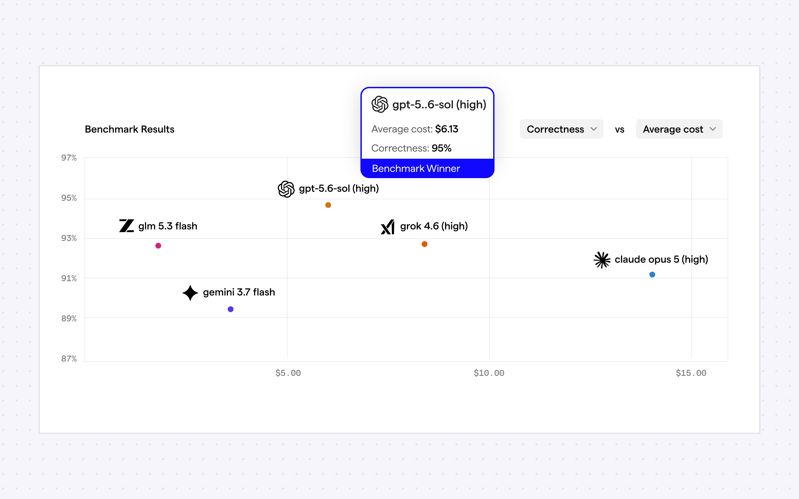
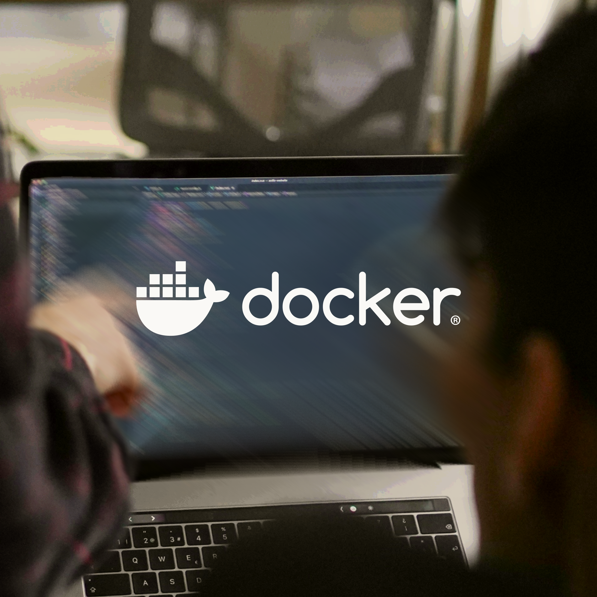
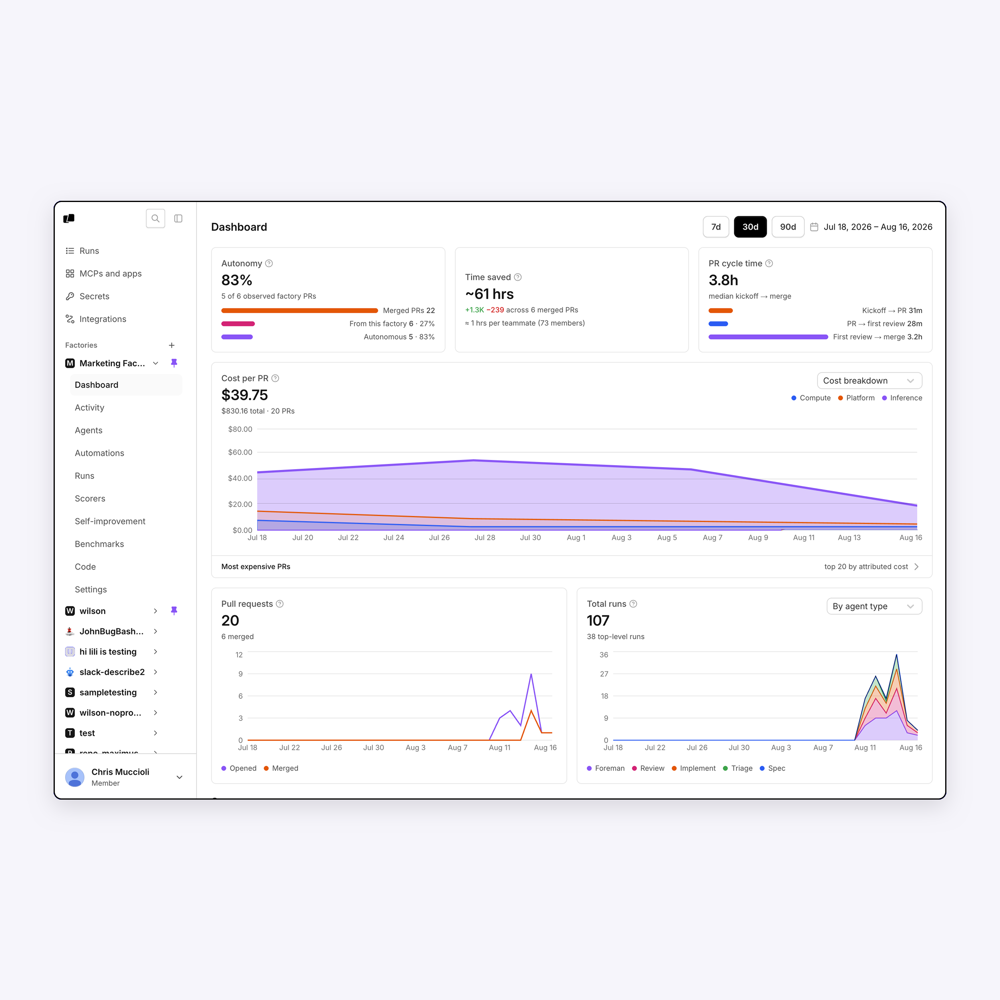
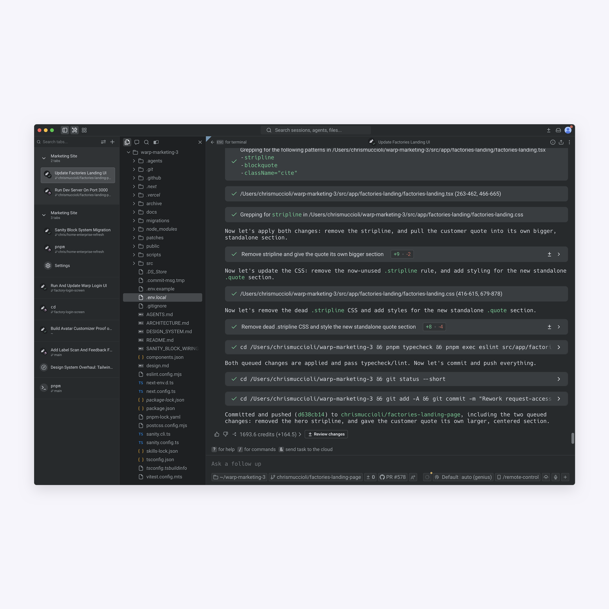
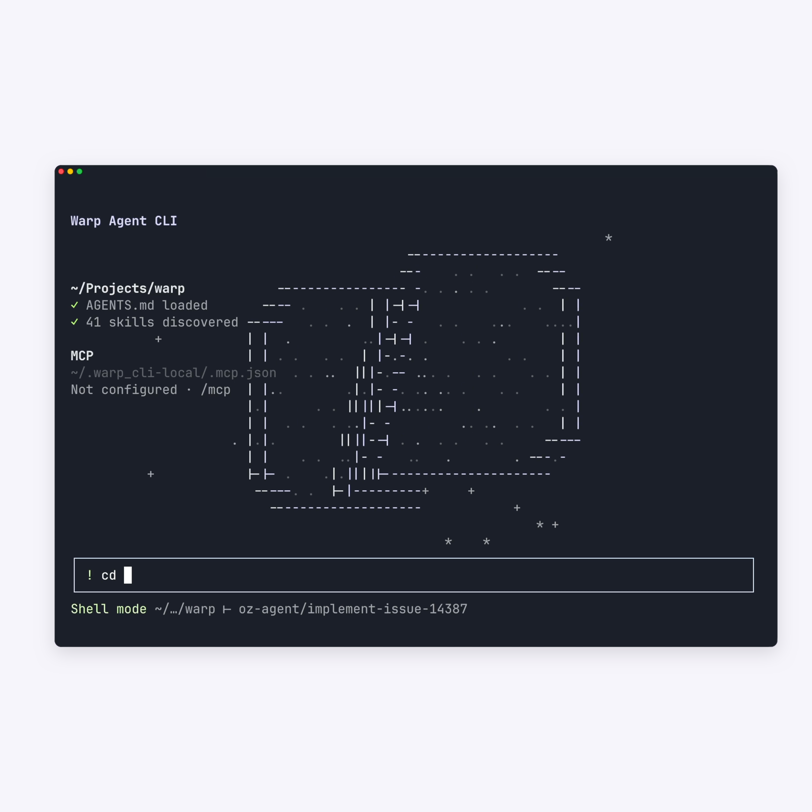

evals on your own work
pass96%
8/13 07:03fail0.4$0.39
8/13 07:02pass0.8$0.53
8/13 07:02pass0.8$0.46
build on Warp: factories as code, any model or harness, with evals, benchmarks, and self-improvement built in.
get up to $10,000 in free factory usage
# factory.yaml schemaVersion: v1alpha1 name: acme-web repositories: - owner: acme name: web mcpServers: github: warpId: mcp_github agentDefaults: model: claude-5-fable-high
defined in code, built for scale, and easy to deploy.
# factory.yaml — factories as code schemaVersion: v1alpha1 name: pr-review repositories: - owner: acme name: web agentDefaults: model: claude-5-fable-high # agents/foreman/agent.md agentType: FOREMAN # agents/review/agent.md agentType: REVIEW model: glm-5.2-fireworks # automations/on-pr/automation.md agent: review triggers: - provider: github event: pull_request_ready
# cli $ warp agent run-cloud --environment ENV_ID \ --prompt "fix LIN-482, low risk only" # api $ curl -X POST https://app.warp.dev/api/v1/agent/runs \ -H "Authorization: Bearer $WARP_API_KEY" \ -H "Content-Type: application/json" \ -d '{ "prompt": "fix LIN-482" }' { "run_id": "run_4026", "state": "QUEUED" } # sdk (typescript) const run = await client.agent.run({ prompt: 'fix LIN-482' }); console.log(run.run_id); # mcp · warp-factory server { "tool": "send_task", "factory_uid": "fct_acme_web", "title": "Fix LIN-482", "note": "low risk only" }
# factory.yaml — factories as code schemaVersion: v1alpha1 name: pr-review repositories: - owner: acme name: web agentDefaults: model: claude-5-fable-high # agents/foreman/agent.md agentType: FOREMAN # agents/review/agent.md agentType: REVIEW model: glm-5.2-fireworks # automations/on-pr/automation.md agent: review triggers: - provider: github event: pull_request_ready
# cli $ warp agent run-cloud --environment ENV_ID \ --prompt "fix LIN-482, low risk only" # api $ curl -X POST https://app.warp.dev/api/v1/agent/runs \ -H "Authorization: Bearer $WARP_API_KEY" \ -H "Content-Type: application/json" \ -d '{ "prompt": "fix LIN-482" }' { "run_id": "run_4026", "state": "QUEUED" } # sdk (typescript) const run = await client.agent.run({ prompt: 'fix LIN-482' }); console.log(run.run_id); # mcp · warp-factory server { "tool": "send_task", "factory_uid": "fct_acme_web", "title": "Fix LIN-482", "note": "low risk only" }
evals, benchmarks, and self-improvement loops drive measurable gains.
How we used Warp Factories Benchmarks to test models on our own engineering tasks and optimize for cost without sacrificing quality.
read case study
Run agents confidently with guardrails in place, centrally configured agent access, and centrally managed permissions.
Rectangle Health turned a senior engineer's side project into Rex, a self-improving AI teammate built on Oz that now writes 54% of its own code.
read the story
Docker adopted Warp for a more user-friendly terminal experience, using Warp Drive to streamline repetitive workflows and boost team productivity.
read the storyany MCP-capable coding agent.
frontier or open-weight, chosen per pipeline stage.
warp's cloud, or self-hosted in your own VPC.
you own and store what your factory produces.
continuous improvement, better governance and security, by default.
every factory agent captures a screenshot or video so you can verify its work before shipping a PR.
Activations dropped on the contact sales page this week. Can you investigate and fix the culprit?
On it — opening the browser to test the flow myself...
Enter your work email and answer one question — we'll get you to the right person on our team.
Trusted by over 800,000 developers and thousands of engineering teams at leading companies
Found it — the testimonials section was hidden by collapsing divs. Patched, PR #436 is up for review.
Warp is an open agentic development platform that was built to work wherever and however you work.



A powerful coding agent that works in any terminal.
a factory is a fleet of agents wired to your SDLC — triggered by an issue, a slack message, or a schedule, and coordinated by warp factories from triage through review to a mergeable PR.
as code, in a factory.yaml + supporting agent files. define triggers, agents, models, and approval gates — check it into your repo like any other config.
no. bring your own model or harness (e.g. claude code or codex) — warp factories works with whatever your team prefers and helps identify the most cost-effective configuration over time.
no. factories is a separate product — nobody at your company has to use warp terminal. work comes in through tools you already use, like slack, linear, jira, github, and gitlab. if you do use warp terminal, it has built-in factory integrations (native mcp) so you can iterate locally.
most orgs start around 20-30% of PRs fully automated, starting with simple tasks. over time this goes up as models improve and your factory self-improves.
wherever you choose — warp's cloud, or fully self-hosted inside your own VPC, under your existing retention and compliance rules.
humans put work into the factory via your existing tools like slack, teams, linear, jira, github and gitlab. at any time you can iterate on that work locally and the factory agents loop you in proactively when they need help.
yes — most teams start with a single low-risk workflow, like dependency bumps or flaky test triage, before expanding coverage.
usage-based, priced per agent run. qualifying orgs get $10k of factory usage during closed early access.